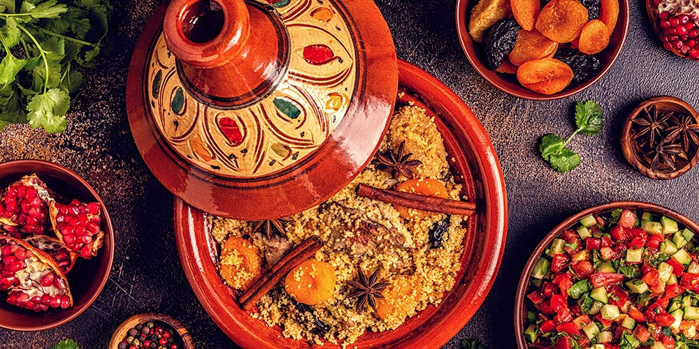
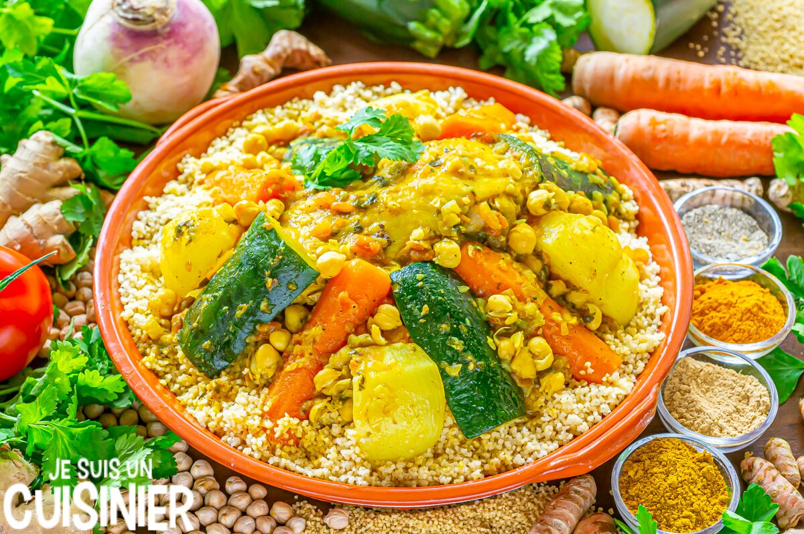

de marokaanse keuken

De Marokkaanse keuken, geworteld in een rijke geschiedenis die teruggaat tot de oude Berbers, heeft zich ontwikkeld tot een smaakvolle en gevarieerde traditie. De eeuwenlange botsingen met verschillende culturen en beschavingen heeft de Marokkaanse keuken gevormd tot wat het vandaag de dag is.
Geschiedenis:
De oorsprong van de Marokkaanse keuken is verweven met de Berberse cultuur, waarin lokale ingrediënten als granen, olijven en dadels een belangrijke rol speelden. Met de komst van de Arabieren brachten nieuwe specerijen zoals kaneel en koriander een explosie van smaken. De Arabische overheersing introduceerde ook het gebruik van tajines, die langzaam koken en stoven bevorderden, waardoor sappige en smaakvolle gerechten ontstonden. Handelsroutes brachten exotische ingrediënten en kooktechnieken, terwijl de Moorse en Ottomaanse invloeden de culinaire diversiteit verder verrijkten.Ingrediënten:
De Marokkaanse keuken staat bekend om het gebruik van aromatische kruiden en specerijen zoals kaneel, komijn, koriander, gember en saffraan. Citrusvruchten, amandelen en olijven voegen een unieke twist toe aan gerechten. Couscous, een essentieel element van de Marokkaanse keuken, wordt vaak gebruikt als basis voor maaltijden. Gedroogde vruchten zoals rozijnen en dadels zorgen voor een zoete toets, terwijl verse kruiden zoals munt en peterselie voor frisheid zorgen.
Gerechten:
Tajine: Deze stoofpot, vernoemd naar de karakteristieke aardewerken schotel waarin het wordt bereid, bevat een scala aan ingrediënten zoals lamsvlees, kip, groenten en gedroogde vruchten. De langzame bereiding zorgt voor een mooie mix van smaken.Couscous: Een basisvoedsel in Marokko, couscous wordt vaak geserveerd met gestoofd vlees, groenten en een overvloed aan kruiden. Het is een veelzijdig gerecht dat rijk is aan texturen en smaken.
Pastilla: Een hartig en zoet gerecht, pastilla is een delicate taart gevuld met lagen dun deeg, amandelen, kip en een vleugje kaneel. Het is een ware smaakexplosie.